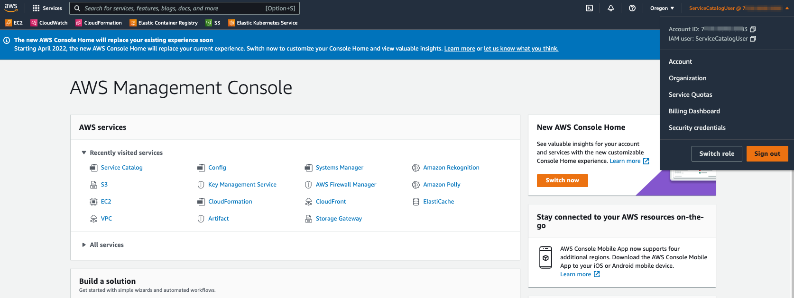
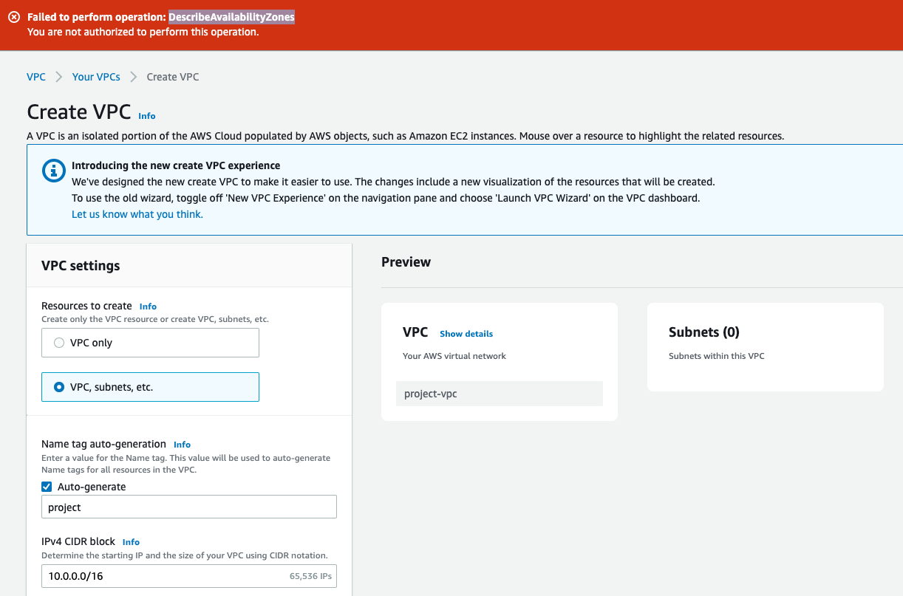
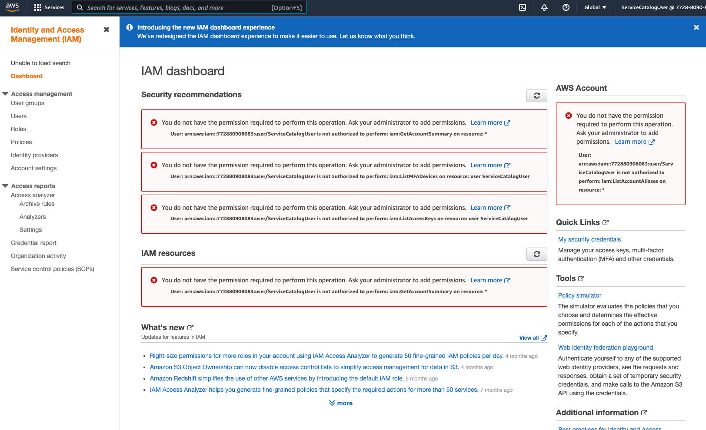
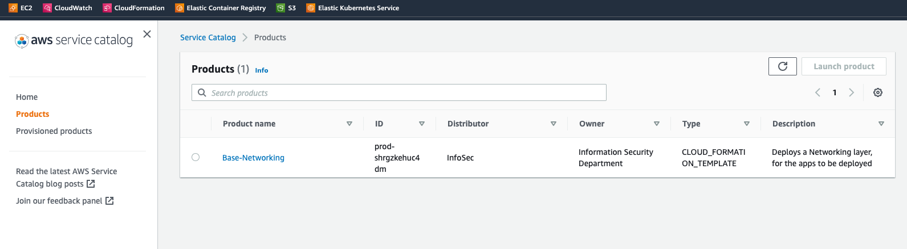
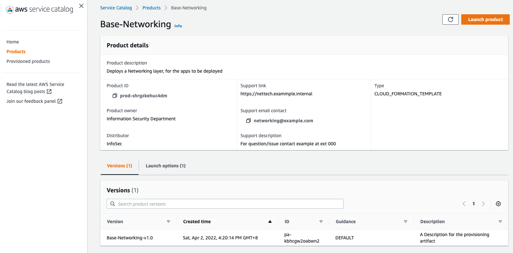
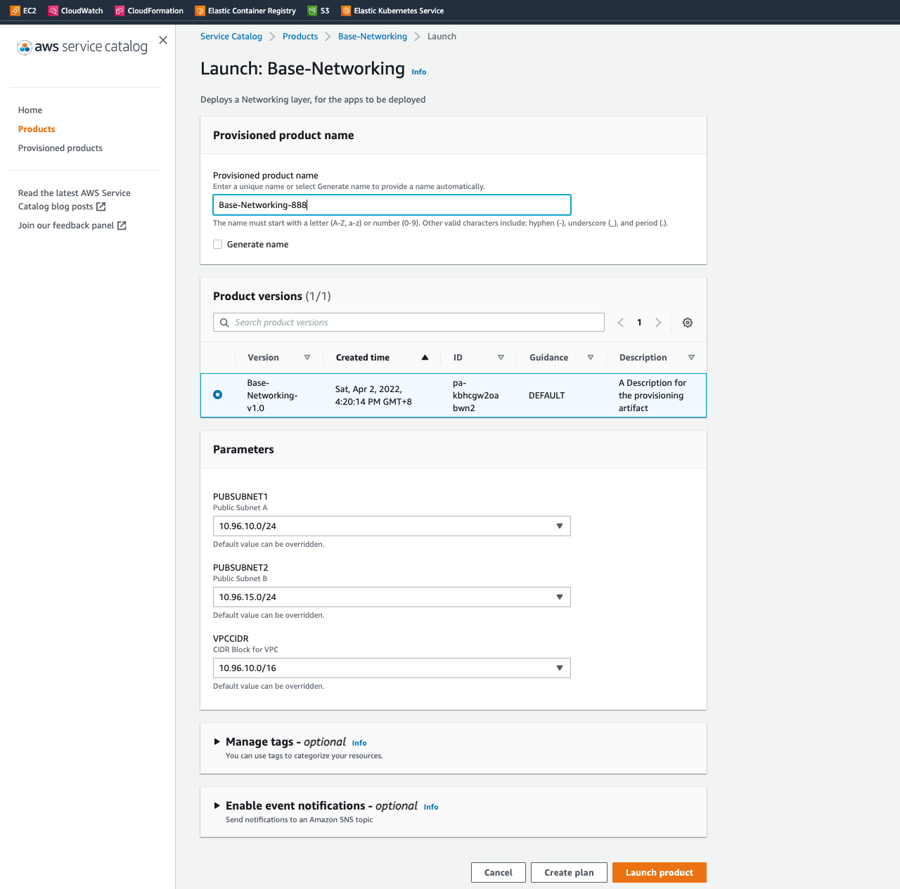
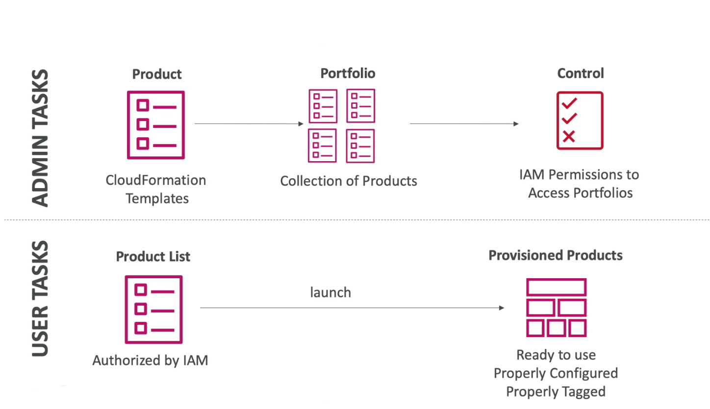
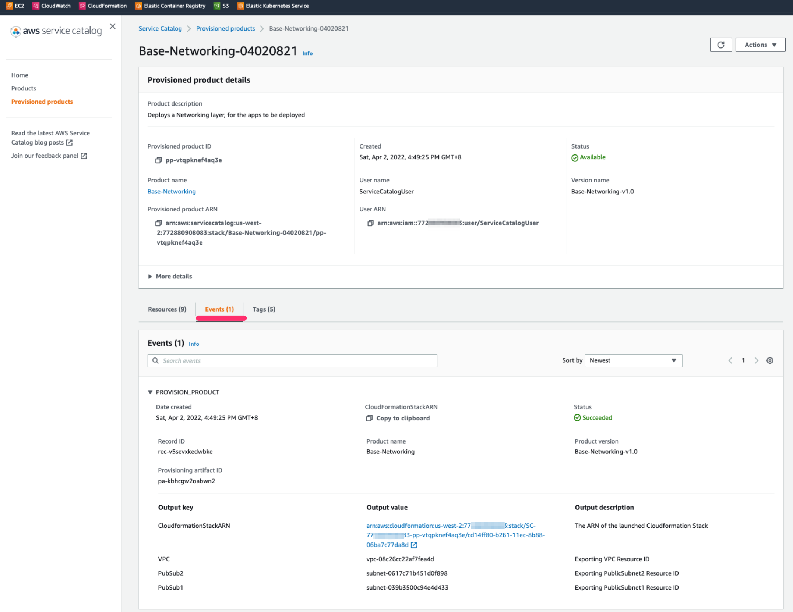
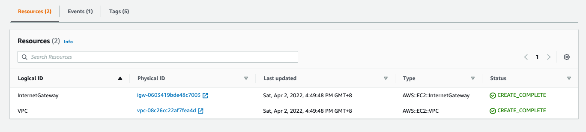
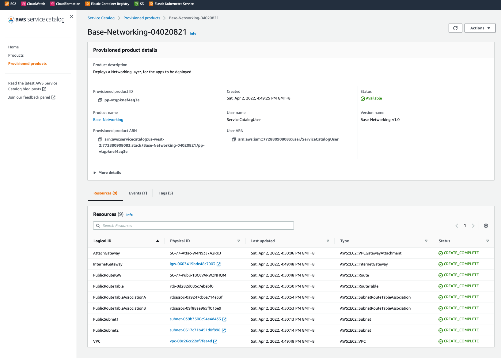

前言
首先什麼是AWS Service Catalog [1]，它可以利用在公司組織的管理，建立和管理已核准在 AWS 上使用的 IT 服務型錄，簡單來說，透過包裝好的AWS 資源 eg. EC2, S3, RDS etc. 部署到你的account之中。為什麼要有AWS Service Catalog？常見問題的就是確保符合企業標準，一般的account user通常只能使用，而不應控制AWS 資源，因此我們只授與Account內可操作Service Catalog資源，你可以想像是，有安裝管理包或是自主式管理在帳戶之中，要使用到任何AWS 資源，只需要透過AWS Service Catalog，就部署你所需之資源，如此即能滿足集中管理 IT 服務。具體的優勢如下：
1) 集中化：集中化 IT 服務部署好處理是，控制可有效控管 IT 服務和版本、每個可用服務中設定的內容，以及誰取得個人、群組、部門或成本中心的許可存取權； 2)合規：如果你的公司收到一個資安需求，來自於董事會，它的目標要實現一致性管理和滿足合規要求，同時讓使用者能夠快速地僅部署自己所需的已核准 IT 服務。我想使用 AWS Service Catalog AppRegistry，你可以定義和管理應用程式及其中繼資料，以追蹤應用程式層級的成本、效能、安全、合規和操作狀態。
▌1. 實驗權則分離 AWS Service Catalog User
實驗開始前先準備二個User
- 第一個被控管的名為
ServiceCatalogUser- 這個帳號沒有權力建立VPC資源，
- 第二個是管理員
superuser- 有能力建立AWS Service Catalog products, portfolio
step1. 首先登入EndUserSignPage

step2. 登入後確認帳戶
右上角為名稱ServiceCatalogUser，代表為被控管的user

step3. 權限測試
建立 VPC → 被擋

step4. IAM 測試
建立 IAM → 被擋

▌2. 使用Service Catalog console部署VPC服務
前言提到的集中管理 IT 服務，現在透過ServiceCatalogUser(被控管的user)，它可以利用 AWS Service Catalog，新增AWS 相關服務
IT 服務版本並通知最終使用者，讓使用者可以及時了解最新的更新。利用 AWS Service Catalog，您可以透過指定限制條件 (例如，限制可以啟動產品的 AWS 區域) 控制對 IT 服務的使用。
step1. Service Catalog
先至 Service Catalog console
進去products頁面後，這邊顯示product 名為
Base-Networking是由Service Catalog管理員所分派可用的AWS 資源
step2. Product details
Service Catalog之中可以做到版控任何被派送的AWS 資源
Versions:
Base-Networking-v1.0
step3. Launch product
- 假定user要選用Base-Networking這項資源
- 填入相關參數 e.g version, subnet, tag etc.

補充：底層說明[2]
- 其實它的底層是靠CloudFormation 幫忙部建
- 其中被派送的AWS 資源即是一個個的CloudFormation Templates
- 另一個觀念是Portfolio，它是匯集多個Products所形成的目錄

補充：中控層下的操刀者 | CloudFormation
完成的products部署，同樣有output value
這個形同於CloudFormation output，我們能挑出重要的資源於完成部署後顯示

▌3. 結論：驗證一般Account內的VPC
透過Service Catalog product幫你建立VPC 資源：
剛剛account，還被鎖定的VPC 部署，但現在可以透Service Catalog正常部署

驗證account 內的VPC項目：
以下VPC item 皆由Service Catalog product所發行
如此，這個實驗場境滿足集中控管之需求
